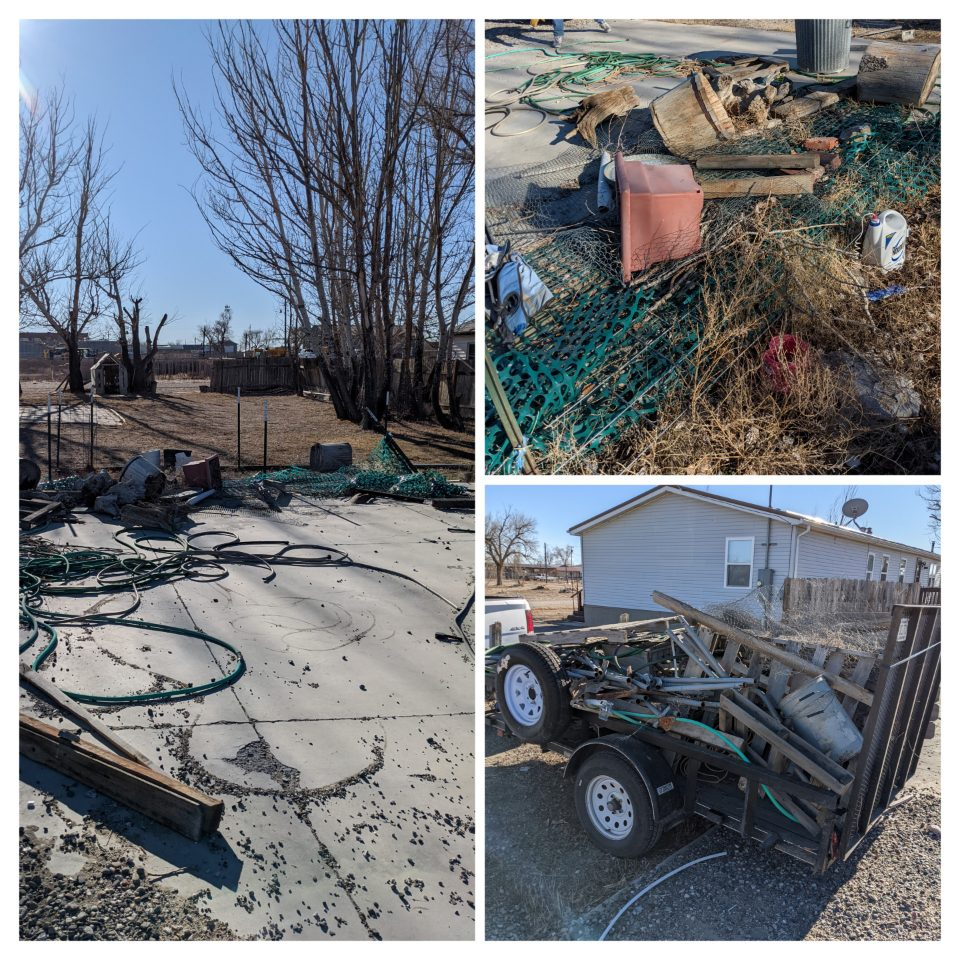

Photos from the work.
Cleanouts, hauling, and light demolition from our jobs. See the items, spaces, and work shown in each photo set.
 Garage cleanout · Before & afterA loaded trailer and items in the garage, followed by open floor space.
Garage cleanout · Before & afterA loaded trailer and items in the garage, followed by open floor space.
 Light demo — estate cleanout · Lander, WY
Light demo — estate cleanout · Lander, WY
 Rental property turnover · Riverton, WYKitchen refrigerator removed and loaded on the trailer. The cabinets and dishwasher remain in place.
Rental property turnover · Riverton, WYKitchen refrigerator removed and loaded on the trailer. The cabinets and dishwasher remain in place.
 Estate cleanout · Riverton, WYBelongings and leaves cleared from the patio. The air-conditioning unit remains in place.
Estate cleanout · Riverton, WYBelongings and leaves cleared from the patio. The air-conditioning unit remains in place.
 Debris removal — foreclosure cleanout · Riverton, WY
Debris removal — foreclosure cleanout · Riverton, WY
 Junk removal — foreclosure · Lander, WY
Junk removal — foreclosure · Lander, WY
 Light demo — estate cleanout · Lander, WY
Light demo — estate cleanout · Lander, WY
 Light demo — garage cleanout · Riverton, WY
Light demo — garage cleanout · Riverton, WY
 Fence cleanup — apartment exterior · Riverton, WY
Fence cleanup — apartment exterior · Riverton, WY
 Tree trimming — estate cleanup · Riverton, WY
Tree trimming — estate cleanup · Riverton, WY

Junk removal · Shoshoni, WY Have a similar space to clear?
Tell us what needs to go and what should stay. For a rental or listing, include your target date and access details.
Get a Quote